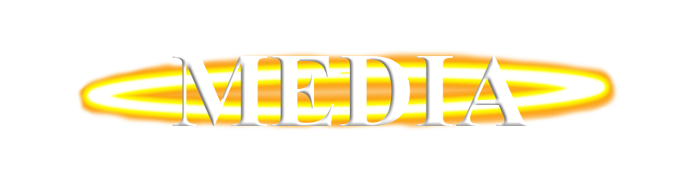

|
 |
I dont really own very many hats. I have like, one normal baseball cap, a knitted beanie a got as a gift i got during christmas, and a military type microflece one i use when im in the woods, hunting or doing what ever it is that i do there. But recently, i got a ушанка(Ushanka). A DOMO ушанка. And this thing rocks. I always wanted one of this since i was a kid and i finally got one. I also always wanted those one Domo beanies that had the long "rope" thins that hang down off of the sides. But all the ones i liked were way to expensive. I don think its actually an official domo product, but i honestly dont really mind it. I love it all the same and ive been obsessed with it ever since i got it. Im wearing as i write this. So im pretty excited about it. I also bought a Crow call to attract crows, becuase i think im going to try to befriend the local crow population in my area. And if i manage to actually befriend some, i will document it here on my site. I have yet to actually use it outside yet because, believe it or not you actually have to practice using them to get it to sound like a real crow. And if you dont, they will either not even think its a crow and not come, or they will think it is a crow who is injured or dying and avoid the area. And crows are very smart and remember peoples faces, so if they see you in the spot they hear what they believe to be an injured crow, they will assume you are killing or hurting crows and avoid you. But i think i will try it out this week. I might record it to upload to my vidlii, but im not sure how i will manage to do that with out revealing too much about where i live. But i might. I will 100% upload pictures of the crows i attract. Although my only camera is the one on my shitty 40 dollar flipphone so they arent gonna be very good, and the only other photo cameras i own are all film. Like poloroids. The really old ones. Actually, literally as i wrote this i remember that my mother still has one of the cameras she used to take photos of me during my childhood and she never uses it anymore, so i think i will ask if i can use it and/or have it.
Moving on from the stuff above, i actually have been having some video ideas. Some of them i really want to make. But to be little more personal than i normally am on both this site and on my profiles in general, ive been strugglin with some mental stuff recently so it has been kind of hard to do very much at all. But i really enjoy making videos. Im obviously not popular in any meaning of the world, but i really dont care to be. I just like to make them, and i like seeing that other people are actually watching the stuff i make or write. Especially if they like it. And if they dont, me being me, i still enjoy that because if you know anything about me at all, you know i tend to do a little trolling so i can just b8 them in the comments if they bother to make one, which is always fun. BUT, believe it or not, i can do more than be a post ironic faggot who just trolls and can actually enjoy thins (unlike a lot of people online these days) So i really do appreciate the few people who actually read and watch the stuff i put out. Moving on from the rambling about that, I have had a few ideas for videos/series that ive want to make but either have not been able to or just not gotten around to yet. One of which, is a parody of the show House MD. But made in gmod. I never knew if those styles of videos counted as machinimas or not, but like the stuff kitty0706 used to make. I had part of the first episode of it done but i never got around to finishing it and lost the files, and i think the actual trailer is on a channel thats long since banned. But at some point i will actually get around to making it. Another one, is that ive been wantin to make a video ranking every flavor of Mounain dew. Because 1, i think itd be funny and 2, Mountain Dew is my favorite soda so i think it would just be a very fun video to make. But i dont have the money to be able to buy 80trillion mountain dews lol. I guess i could probably make it over the course of a few months or years or what ever, and either upload individual videos reviewing it or save the thoughts i have in a document and then when ive tried them all release the video. But at somepoint ill make that one as well. Right now, ive had an idea for the vidlii halloween contest, But i wont disclose that as to not spoil it. (if i end up making one) The last idea that ive had recently, is me either recording or live streaming me learning how to program. Because i dont actually now how to do that. I used to know a bit of python and something else, but i cant rememeber what. But that was when i was like 12 or 13 or something. Its been a long time since then so ive forgot it all. So it might be interesting to do that. Ive also just been wantin to live stream in general. I think it might be interesting. I have in the past, but i would only grief in games. so i might do streams where i do other stuff than just griefing. Im not for sure though. Ive ran out of things to say, so im gonna end this here. Thanks for readin this if you made it this far, and expect more in the near future as i will be writing more.